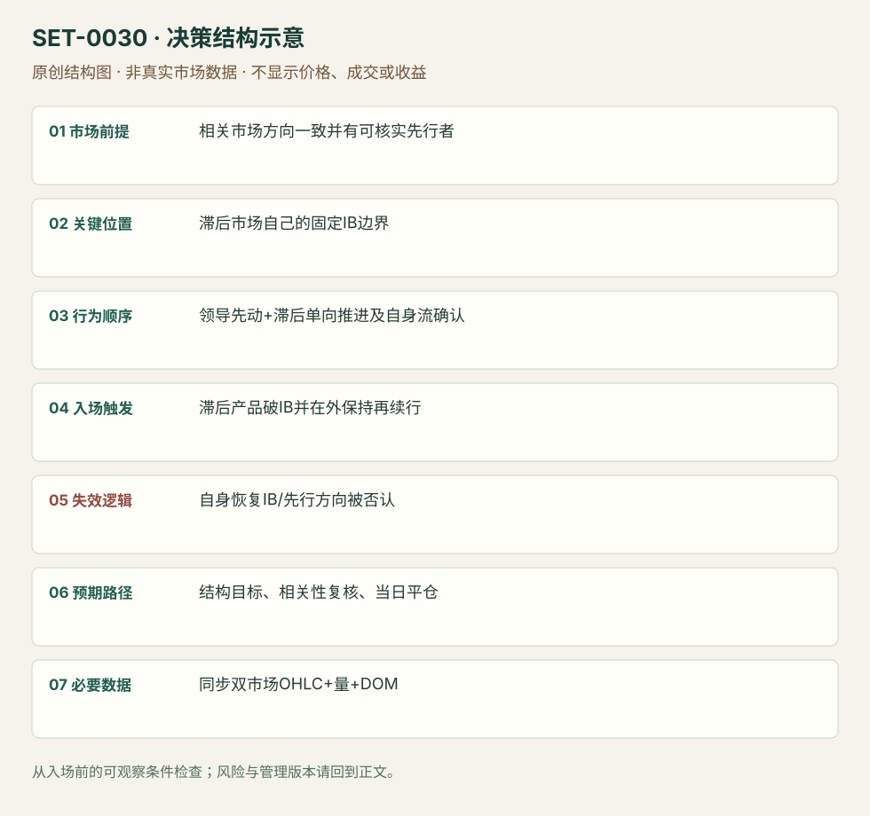

领导市场先行的滞后市场 IB 突破
Correlated-market-led Initial Balance Break · SET-0030 · reviewed · v1.0.0
盈利证据：not_established。审查范围与来源版本见第13节；未知字段保留缺失原因。
1. 名称与快速概览
一个相关期货先显示方向，另一个向自身 Initial Balance 边界单向推进；滞后市场也得到自身成交与报价确认后交易突破。相关市场领先是本条的必需条件，单市场强量突破归其他条。
记录口径：PA supporting；必要数据 synchronized_market_OHLC、volume、DOM、initial_balance。名称性质：来源术语或研究术语。reviewed 只表示本条规则与证据记录审查通过，盈利状态为 not_established。
2. 本质与行为假说
共同信息对相关市场的反应可能不同步，领导市场提供滞后市场突破的前置证据。源文重点是DAX先行和Eurostoxx自身报价下移；本库限定该组合，而不声称任意相关资产都能预测彼此。
3. 适用市场与环境
来源欧洲现金开盘附近 Eurostoxx/DAX，下跌方向示例。两者时钟可靠、关系仍存在，并且滞后产品自身IB已固定；独立成分股新闻和不同休市会削弱关系。
来源实用市场：Eurostoxx期货与DAX期货。
Session：来源欧洲现金开盘与自设IB；图轴时区未明。本库使用Europe/Berlin现金参考段另行锁定IB窗口，图例窗口不能默认为纽约首小时；该日收盘前平仓。
跨市场：本版不主张已经验证的跨市场迁移；更换市场必须重定数据来源、流动性与session。
4. 出现前的观察清单
同时记录两市场IB、现金开盘时刻、同期相对量；以当时截图保存谁先跨参考。DOM中被动卖单下移必须有实际成交/价格响应，单纯报价数量不够。
5. 形成过程与状态转换
领导市场先行动 → 滞后市场单向逼近IBL → 其量/速度增加且反弹弱 → 自身破IBL → 小两向交易仍不能返回中段 → 再续跌。
6. Entry trigger 与执行方式
来源在滞后市场突破并保持时执行；编辑审查版要领导市场仍保持弱、滞后市场在IB外停顿后继续向下。与只把DAX放屏幕上的普通突破不同，两市场条件须同时满足。
7. Invalidation 与止损逻辑
滞后市场回IB内部并恢复到事前选定反弹高点撤销保持；领导市场方向被否认是额外软失效。精确缓冲与时长源文未给，属于需测试的编辑风险模块。
8. Exit、target 与 trade management
下一已知结构为参考，报价单向性消失、回抽深度加大时减仓；领导/滞后关系消失重新评估。数据发布前是否清仓应事先定，本库日内版在现金参考段结束前平仓。
9. 常见 variations
上方向和不同欧洲相关产品是迁移假说；没有独立素材不能直接声明支持。快量与被动报价下移是同一机会的确认层，不分成两条。
10. 失败方式与不交易条件
因时钟错位造成假领先；领导市场已反转而滞后仍追；IB口径不同；大量报价撤销未成交；自身突破后已恢复中段。
11. 与相近 setups 的区别
12. 图表与案例解读
已看双市场价格/量图，作者给出领先叙事和两个黄框。没有动态回放，DOM下移的文字描述已读但未直接观察。
- [VIS-000032] Chart of STOXX and DAX market before and after the Initial Balance break；定位：Chart of STOXX and DAX before and after IB break。左右黄框固定IB，现金开盘后两者下行；静态图不够测量精确领先时长。 验证：chart_viewed。

本地原创示意（VIS-000087，非真实市场数据）：

小屏阅读可打开原尺寸示意图并缩放。

此图用于对照识别顺序与风险定义；不计入真实案例覆盖率。
视觉材料元数据与查看范围
- VIS-000032 · real_source_chart / structure_and_trigger / chart_viewed
品种：Eurostoxx / DAX；日期：未知/不适用；周期：未知/不适用；时区：未知/不适用
日期未在图中核对；周期未在图中核对；时区未在图中核对；来源图表不是成交审计 - VIS-000087 · synthetic_structure_diagram / illustration_only / generated_not_market_evidence
品种：未知/不适用；日期：未知/不适用；周期：未知/不适用；时区：未知/不适用
无真实品种、日期或价格：这是结构示意
13. 证据、分歧与未知项
同一Axia家族两项讨论，独立佐证有限。文字提到视频回放，未观看，故不能把静态图当实际测到毫秒级领先或DOM动态。
- [EVD-000057] Axia Futures，《Initial Balance Break Led By Other Correlated Market》，SRC-0073；定位：Clues Leading... / Large Orders Chasing...。支持：DAX先行、Eurostoxx向IB低单向逼近，现金开盘量/速度增加、报价下移，突破后反弹不能恢复IB中段。
- [EVD-000058] Axia Futures，《Trading Initial Balance Break Using Market Profile》，SRC-0072；定位：IB break summary / failure to reach target before NFP。支持：同家族IB案例表明先验结构不保证到达目标，未续行及临近数据发布需要管理。
审查边界：来源份数与独立核心核验分开；当前类别为 limited_single_family。正文中的概念、官方事实、衍生解说或同族资料只按其支持范围使用。
14. 可用于复盘的检查表
- ☐ 下单前的前提可核对：相关市场方向一致并有可核实先行者
- ☐ 事前标记位置：滞后市场自己的固定IB边界
- ☐ 行为按顺序出现：领导先动+滞后单向推进及自身流确认
- ☐ 实际触发符合选定版本：滞后产品破IB并在外保持再续行
- ☐ 事先写明本次否定条件：自身恢复IB/先行方向被否认
- ☐ 目标/路径只用当时已知信息：结构目标、相关性复核、当日平仓
- ☐ 数据满足 同步双市场OHLC+量+DOM；记录时间、点差、滑点、队列和未成交
- ☐ 记录截止平仓及规则偏离；正常亏损不事后改成“未成立”
15. 后续验证问题
领先需多长才大于数据延迟？把DAX条件移除的消融结果？报价跟随与主动成交哪个提供额外信息？
双向相关导航
- SET-0027 市场确认后的个股相对强弱交易 0030 两个相关期货同方向、领导市场先破IB带动滞后市场；本条先用相反响应检验股票强弱再等市场。
- SET-0039 同一水平前后成交能量改变的突破 0039 只需同一产品相对成交能量改变；本条双市场先行不可删。